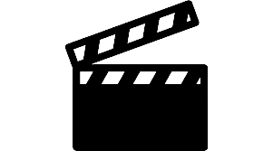

Hobbies
Atenção: Quero esclarecer que todos os hobbies listados abaixo não significam que eu sou bom naquilo que faço, significa apenas que é algo que eu curto fazer
Música
Eu sou bem quieto em certos momentos, mas quando me sinto a vontade pra cantar ou batucar
a mesa pode ter certeza que eu vou fazer um barulho. Na verdade quando começo a tocar ou
cantar é bem difícil alguém me parar. Gosto muito de música então sempre que posso estou fazendo
algo relacionado a isso.
Filmes

No nono ano fiz aulas de cinema na minha escola, aprendi muitas coisas e acabou virando um dos meus
maiores interesses. Gosto muito de ver e conversar sobre filmes. Os gêneros variam muito de acordo com o
meu humor, tudo tem seu tempo determinado.
Cozinhar
Adoro usar a criatividade na cozinha, inventar alguma coisa, aprender alguma nova receita.
me diverto no processo e também com o resultado. Acho bem relaxante descascar umas batatas
e cortar uma carne.